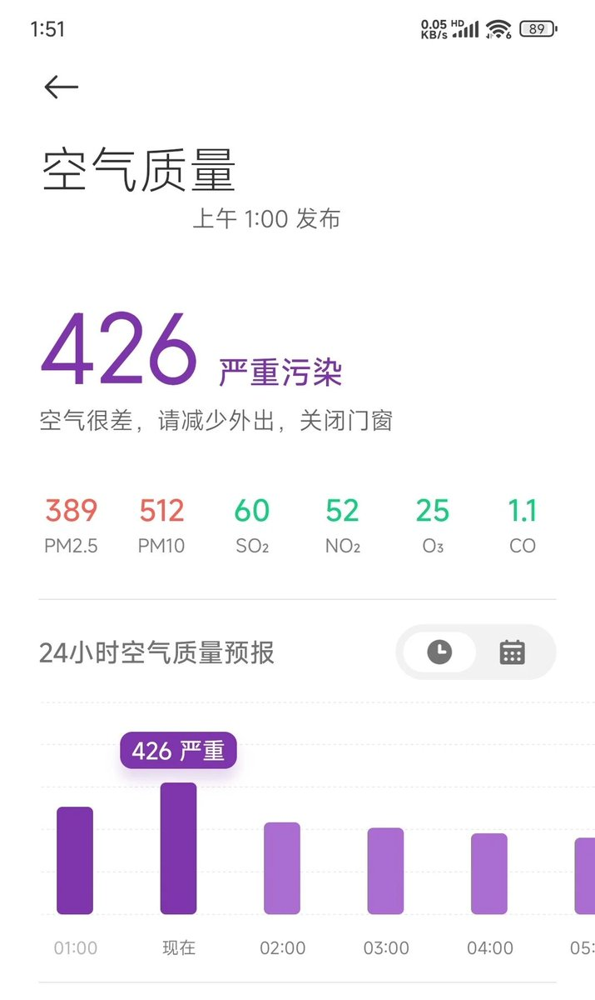

奶昔🥤
@realNyarime
放完各种鞭炮后空气简直就是硫磺杀菌...
虽然知道地球妈妈很难受，可是集上卖的各种小东西好好玩qwq
祝大家在新的一年里：
巨额财产来源明确，能提供证明材料；
频繁出入高档场所，但消费合法合规；
与多名异性保持正当男女关系，不触碰道德法律底线；
大肆敛财，中饱私囊，数额特别巨大，但均为合法商业活动，没有违法违规手段。
坚定理想信念，不忘初心使命，走法治道路，享健康人生。
不是不接好运，接吉言，是有秩序的接，有规划的接，缓接渐接巧接有节奏的富接，让有准备的人先接
以先接带动后接也要具体情况具体接不要盲目接 ，深度贯彻中央指导理念……
对不起我编不下去了，晚安喵🤣
